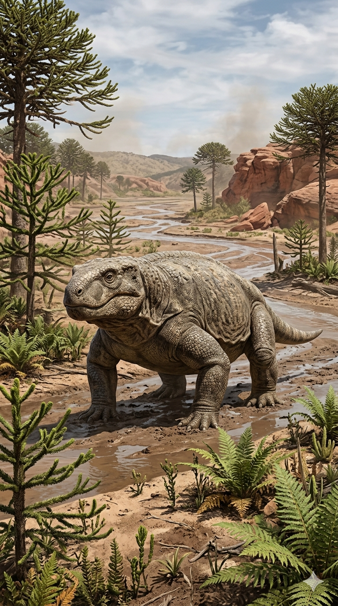
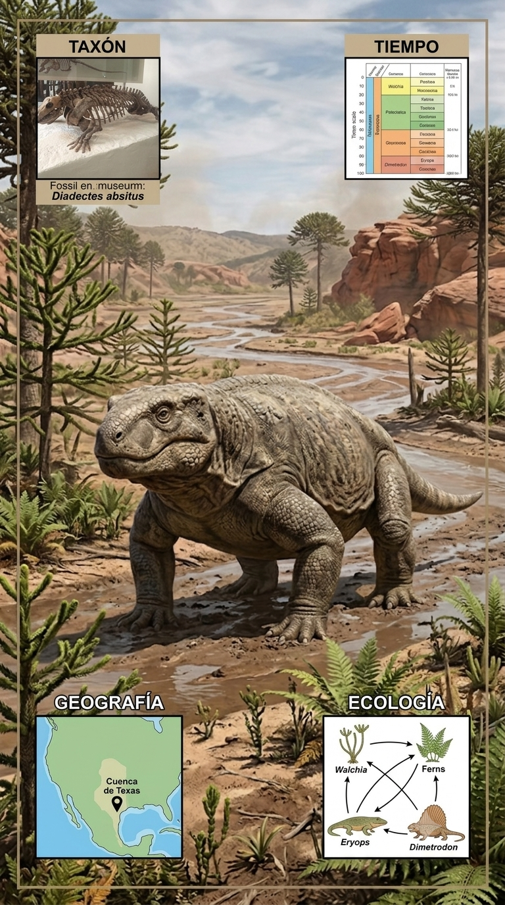
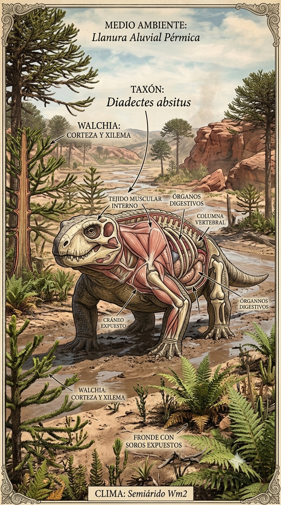
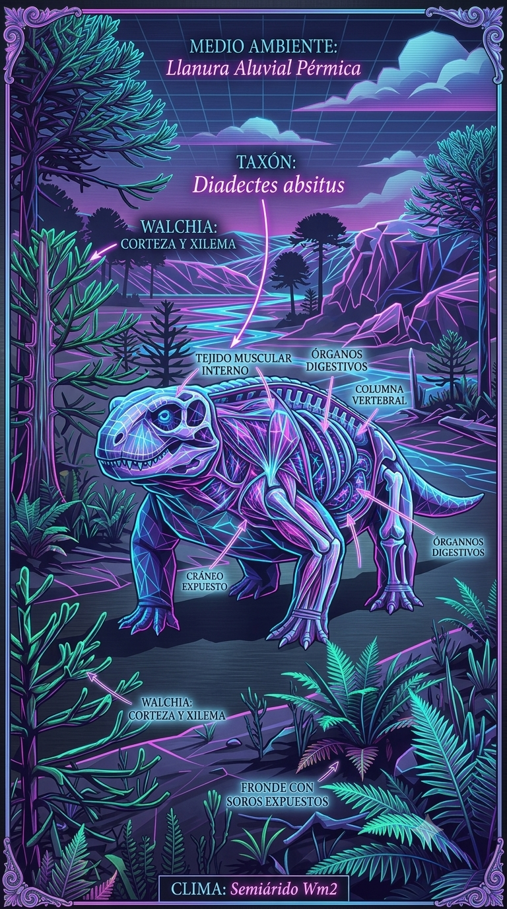

Paleoficha de Diadectes




Periodo: Pérmico Inferior
Edad: Hace aproximadamente entre 290 y 272 millones de años.
Dieta: Herbívoro adaptado a vegetación fibrosa.
Distribución: Formación Cutler, Colorado (Norteamérica).
TAXÓN:
Diadectes sideropelicus
CLADO: Diadectomorpha (Reptiliomorpha)
DIETA: Herbívoro (adaptado a vegetación fibrosa)
TAMAÑO: Aproximadamente 1.5 a 3 metros de longitud
LOCOMOCIÓN: Cuadrúpeda, con miembros robustos y postura semi-erecta para soportar peso.
TIEMPO:
Pérmico Inferior (Artinskiense/Kunguriense), aproximadamente 290–272 millones de años.
GEOGRAFÍA:
Formación Cutler, Colorado (Norteamérica). Cuencas continentales de Euramérica con amplias llanuras de inundación semiáridas y vegetación dispersa.
ECOLOGÍA:
Bosques de coníferas primitivas, helechos arborescentes y licófitos. Compartía el ecosistema con Edaphosaurus, Dimetrodon y anfibios como Seymouria. Fue uno de los primeros grandes herbívoros terrestres especializados en procesar vegetación fibrosa mediante una dentición adaptada. Competía indirectamente con otros herbívoros y podía ser presa de grandes sinápsidos depredadores.
CLIMA:
Wm2 (Semiárido). Condiciones cálidas con una marcada estación seca.
ESTADO ECOLÓGICO:
Estable. Representa una de las primeras adaptaciones exitosas a la herbivoría terrestre de gran tamaño durante el Paleozoico.
Vídeo PalEntropía:
▶ Ver Short en YouTube